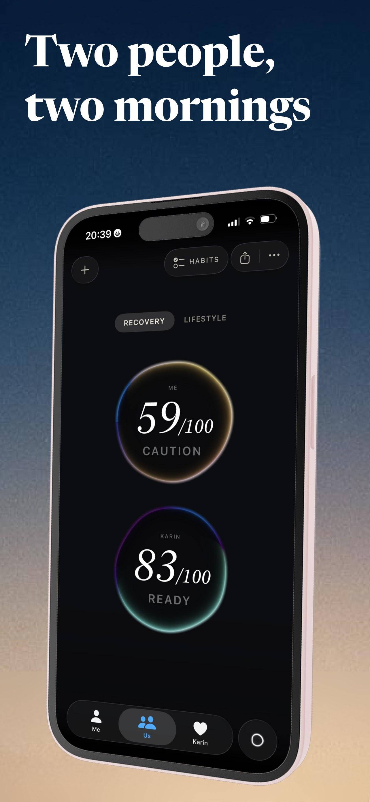
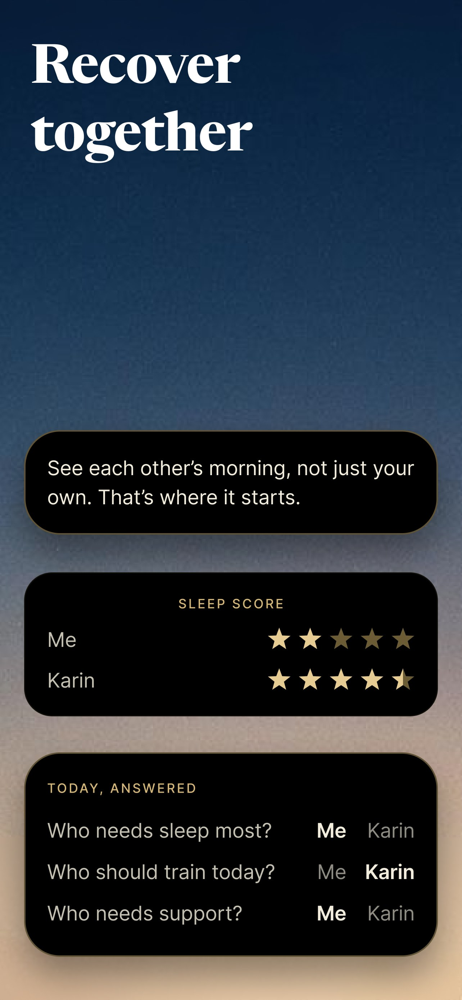
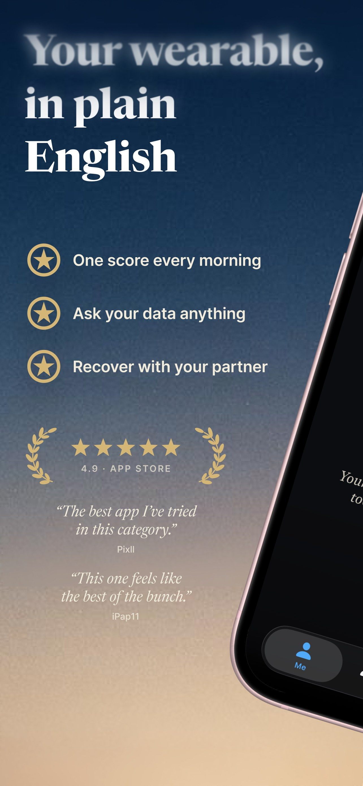
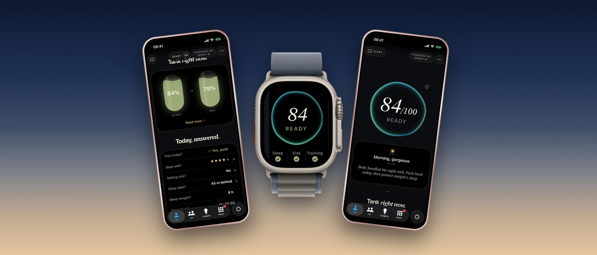

Valentine's: recover together
Two people, two very different mornings. One slept eight hours, the other was up with the baby at three. Woah lets couples see each other's morning without having to ask.
Pair with a six-character code and each of you sees the other's recovery score, sleep and readiness, side by side. "Today, answered" asks the questions couples actually ask: who needs sleep most tonight, who should train today, who needs support. Woah also suggests what you can do for the other person today.
Sharing is in each person's hands. You choose which signals your partner sees, a private signal shows as empty and never as a zero, and you can pause sharing or unpair at any time. Pair with more than one person, a partner, a friend or a training buddy, and see the whole circle ranked on the last week.
Pairing and every number on both sides are free. Woah works with Apple Watch, Garmin, Oura and any wearable that writes to Apple Health.
Images









Facts
- App
- Woah: Recovery & Training on the App Store
- Platforms
- iPhone (iOS 17 or later) and Apple Watch
- Languages
- English, Swedish
- Price
- Free, with an optional Woah AI subscription for the written texts and the coach
- Data
- Reads Apple Health on the device. No account, no ads, data never sold
- Rating
- 4.9 on the App Store
- Developer
- Petter Höglander, Stockholm
- Contact
- petter@woah-recovery.app